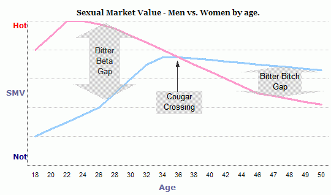
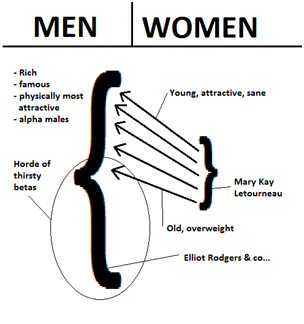
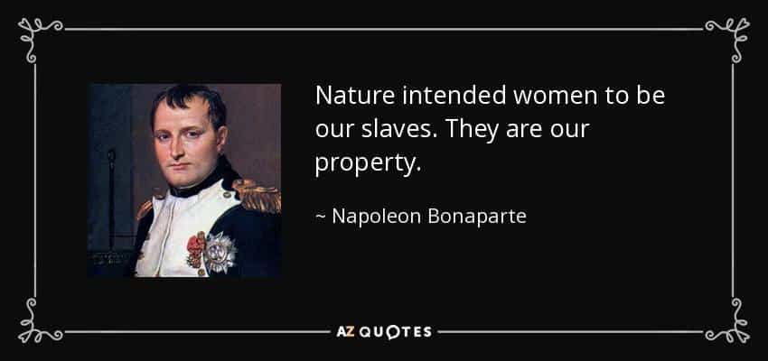

It is grim to realise that we have reached a point where our contemporary society is so sick, that it could be healthier for everyone if women were imposed the legal status of property instead of being free individuals. The fact that this absurd method could indeed create a safer society shows how cancerous our “progressive” Western world has become.
How it would work
Women would keep the status of human beings even by becoming property. They would become the asset of a Senior Male Authority (SMA) from birth until his death or their own. In practice, the bond between man and female property would resemble the one between a legal guardian and a minor, incapacitated senior or mentally handicapped adult.
With women being children in adult bodies, the comparison is appropriate. But where the authority of the legal guardian expires in time, the right over female property would not be finite. All decisions would be taken by the SMA (father, older brother, then husband). The auction of a young woman from a father to a suitor of his choice would be agreed upon by setting a dowry.
Purchasing power would be in the hands of the SMA, preventing women to spend male income on frivolous and useless items like female “holidays” (the real sex tourism), designer clothes, drugs, club entrances and the like.
Women becoming property: the barrel bomb of dread game
This measure would include the right of repudiation for the husband in case of serious misconduct. The decision would have to be studied and approved by a jury of adult all-male peers.
Repudiation would be efficient to keep women in line because they greatly fear being called out, held accountable, and losing resources or status because of self-inflicted behaviour, and this proposal would not deprive them from love. On the contrary, because of the affection that a man shows towards his property (added to the blood or family bound), the women he acquires will be safer. His “investment” has both a financial implication in addition to an emotional one.
To the triggered liberals, women are already property in Islam. But all I hear about it from the left on social media are crickets. Contrary to Shariah law, my theory does not include whipping, gang rape, honour killing, beheading or stoning when women are at fault.
10 societal benefits of declaring women legal property
1. No women in the military or police, so men and women would die less.
2. Divorce would plummet and single mommery would become a rarity.
3. No access to funds (under SMA supervision) for women would benefit the global economy.
4. Being a negotiable asset, women would be under constant male protection.
5. Women (and men) would die less of drug, tobacco, alcohol abuse and the heart diseases, cancers and violent or accidental deaths caused by it.
6. Due to heavy competition, women would have to be thinner, reducing the epidemic of obesity and the health risks that it involves.
7. Less child mortality and death during childbirth (women giving birth younger combined with better healthcare hence greater chances of survival).
8. No more left-leaning parties elected as women would be deprived of the right to vote.
9. Conservative governments elected by men would favour traditional families over leeches and degenerates.
10. Less domestic violence as women would avoid damaged men, having no personal resources (and hitting your woman would be like keying your own car: pointless).
7 ways this proposal would bring balance to the sexual market

1. No more welfare policies encouraging women to remain single or raise bastards. Welfare would be focused on those who need it the most, like veterans or the elderly.
2. No more inflated ego and instant gratification through attention whoring on social media. Its restricted access would create saner women. Promotion of degeneracy would be greatly reduced in the mainstream and social media.
3. No Instagram prostitution for wealthy sheikhs, being defiled for platform shoes and handbags with “stylish” patterns worthy of a child doodle.
4. Women would actively seek males based on their ability to provide, as they would have no alternative access to wealth.
5. Males would access a healthier sexual market, their hard work being rewarded by regular sexual intercourse, relative loyalty and children.
6. No more violent third world hordes imported by the votes of bitter women. No more homosexual agenda, gateway to the next great taboo, the pedophile-friendly agenda.
7. Professional advancement and success earned by women through sexual favours, like the one popular in Hollywood, would virtually disappear as adultery would be a valid reason for repudiation. “Promotion through horizontal refreshment” would only be used by already repudiated women, nothing of value would be lost.

Women being property would render this model obsolete
L’ami Bonaparte avait de l’idée

It is not a panacea. The nature of women can’t be changed, but women-as-property would be finally held accountable after the “empowered” ones spent such a long time driving the Western world into the ground.
Read More: Women Must Have Their Behavior And Decisions Controlled By Men